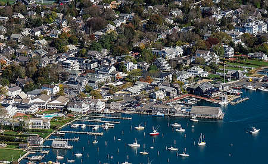

Across Nantucket Sound from Cape Wind, lies another dead-in-the-water, ocean renewable project. But unlike its controversial neighbor just north, Muskeget Channel Tidal Energy wasn’t shipwrecked by a Kennedy clan1, or well-heeled neighbors on Martha’s Vineyard.2 Instead progress tanked due to a lack of the original green energy — money.
Despite raising more than $2 million in state and federal funds, proponents still need $300,000 for additional fishery and archeological studies to satisfy federal requirements.3
“Early experience was that about 70 percent of the cost of an ocean demonstration was just the permitting,” said John Miller, executive director of non-profit MRECo (Marine Renewable Energy Collaborative).3
Muskeget Channel is unique for two reasons:4
Edgartown, a municipality, holds the development rights and not a commercial entity. Environmental studies are being conducted by the University of Massachusetts, and all results public.
Edgartown committed to reserving a permanent tidal test site, saving developers money while also benefitting the industry at-large.

Location: Strong tides flow through Muskeget Channel, with velocities of 3.8 knots at flood and 3.3 knots at ebb.5 The closest grid connection is 5.5 km away on Chappaquiddick Island, with two harbors on Martha’s Vineyard that could provide shoreside support.6
Nameplate Capacity: 5 MW pilot project, generating enough electricity for 1,500 homes each year.4 If successful, developers would expand to a larger array producing up to 20 MW,3 enough to supply 20 percent of Edgartown’s power needs, or 5 percent of the whole island’s power.7
Cost: $35 million for pilot.8 Generated electricity would cost an estimated 25 to 30 cents per kilowatt hour.3 After submarine cable installation (another $5 or 6 million), “a developer could go in and develop it for under 20 cents a kilowatt, which is commercially viable” says Miller.7
Technology: 14 turbines, positioned “in the deepest segment of the channel at a minimum depth of 100 feet.8 Developers plan to use a helical turbine — OCGen — designed by Ocean Renewable Power Company (ORPC),9 and already tested in Cobscook Bay, Maine.10
Environmental Impacts:
Scouring and circulation impacts were determined to be minimal.11 “Muskeget Channel appears to have very limited benthic infauna and epi-fauna”.12
Developers acknowledged “direct impacts from noise produced during project construction and operation on…species that are sensitive”, particularly endangered right whales.8 Researchers also warned of “ship strikes due to increased vessel traffic from maintenance, and collision or entanglement risks from subsurface lines”.
Future:
Edgartown is seeking funds for the remaining environmental studies from the Massachusetts Clean Energy Commission15, but there is no information on when the grant process will be complete. FERC recently set a deadline for town authorities, requiring them “to show cause, within 30 days, why Commission staff should not terminate the prefiling licensing process for the project”.16
Project proponent and self-described optimist, Arthur Smadbeck, admitted “without…funding…it’s going to be very difficult to move forward.”14
For all its promise, the future of tidal energy in Muskeget Channel looks dim. Perhaps most tellingly, MRECo does not list the project on its own “Current Projects” webpage. Instead it features plans for a new Bourne Tidal Test Site, in neighboring Buzzards Bay.